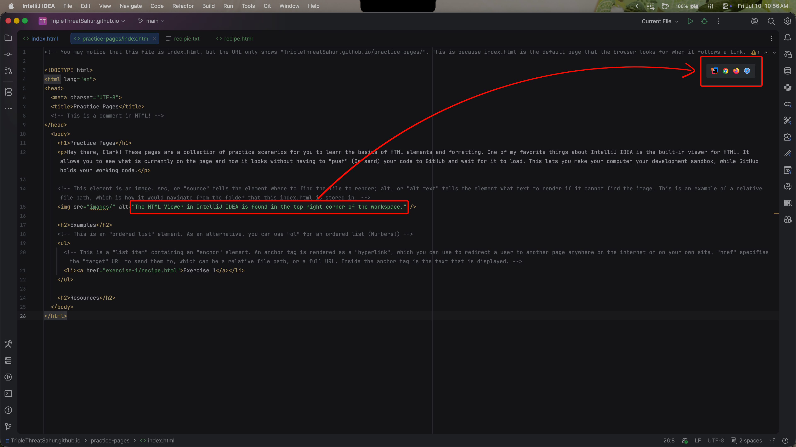

Practice Pages
Hey there! These pages are a collection of practice scenarios for you to learn the basics of HTML elements and formatting. One of my favorite things about IntelliJ IDEA is the built-in viewer for HTML. It allows you to see what is currently on the page and how it looks without having to "push" (Or send) your code to GitHub and wait for it to load. This lets you make your computer your development sandbox, while GitHub holds your working code.

The HTML View in IntelliJ IDEA is found in the top right corner of the workspace.Examples
- Exercise 1 - Write a recipe in HTML
- Exercise 2 - Add navigation
Resources
Below are some resources that I use. Feel free to look at some or all of them to help answer questions you might have. If you want to use IntelliJ Ultimate, you can use GitHub to get a student account.
Basics
- MDN, easily find concise explanations
- W3Schools, easily find documentation on different languages
- CanIUse, check whether a feature is supported in a specific browser